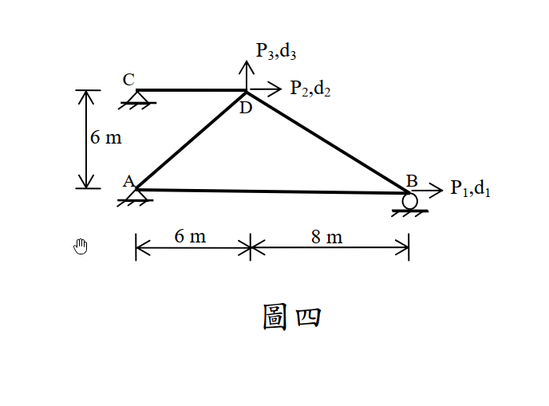
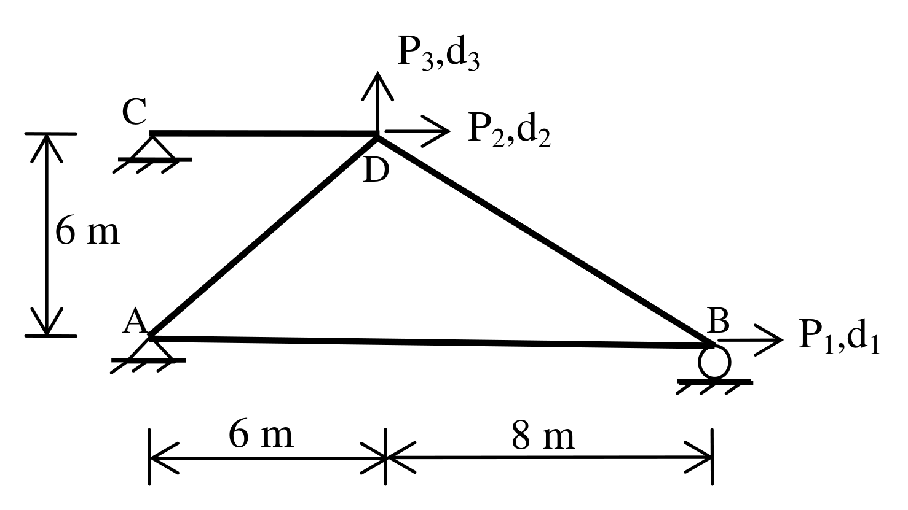
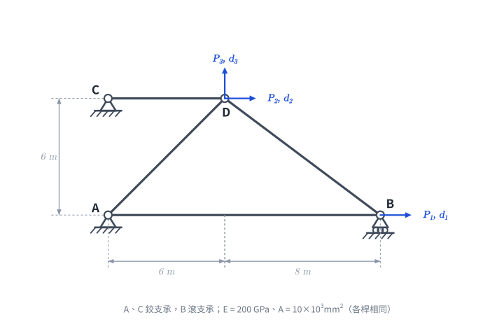
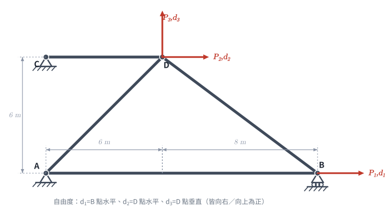
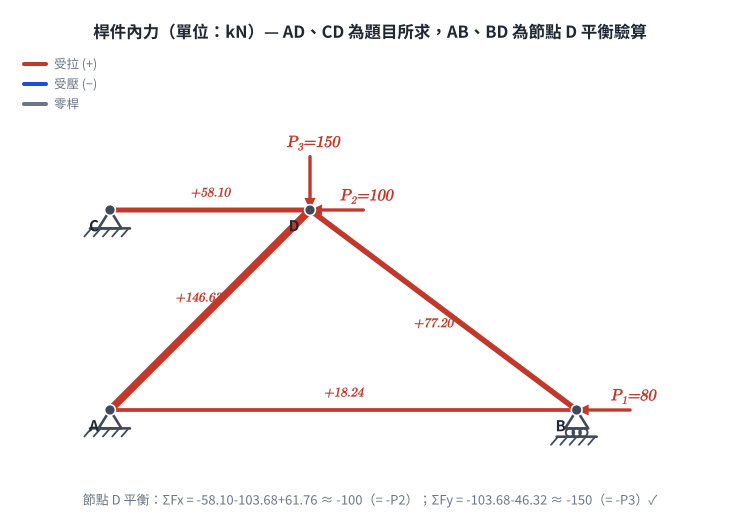

📄 題目正本（考卷原文、附圖與判讀清單；不含解法）
SA-2013-4 題目正本
本檔只記錄考卷上寫了什麼、圖上畫了什麼，不含任何解法。解析見同資料夾
SA-2013-4.md。
判讀清單經使用者確認前，狀態為「待確認」；確認後本檔原則上不再修改（改動須回考卷原圖並記 log）。
| 項目 | 內容 |
|---|---|
| 考卷 | raw/exams/SA-2013_結構學.pdf，第 2 頁（背面）下半，第四題（圖四） |
| 考年 | 2013（民國 102 年）專技高考結構工程技師「結構學」 |
| 配分 | 25 分 |
| 附圖 | SA-2013-4-fig-1.png、SA-2013-4-fig-2.png |
| 判讀狀態 | 已確認（2026-11-05 使用者確認。原轉錄：2026-11-05 轉錄；PyMuPDF 110 dpi 整頁＋250–800 dpi 局部放大、PDF 向量座標；盲讀於開啟解析前完成） |
1. 考卷原文（逐字）
四、如圖四所示桁架結構，請應用直接勁度法組成對應位移(d₁、d₂、d₃)之勁度矩陣。若所得位移(d₁、d₂、d₃)為(0.1277，0.1743，0.7055)mm，求所對應施加外力(P₁、P₂、P₃)值，並求桿件 AD、CD 之內力。所有桿件 E＝200 GPa，A＝10×10³ mm²。使用其他方法不予給分。（25 分）
2. 考卷給的公式、附表與參數
- 考卷沒有給任何參考公式或附表。
- E = 200 GPa、A = 10×10³ mm²。
- 位移 (d₁, d₂, d₃) = (0.1277, 0.1743, 0.7055) mm（題目給定）。
- 考卷沒有標 CD 桿長度（見判讀清單 #2）。
- 卷首注意事項：可以使用電子計算器。不必抄題，作答時請將試題題號及答案依照順序寫在試卷上，於本試題上作答者，不予計分。
- 考試時間：2 小時。
3. 附圖

證據圖 SA-2013-4-fig-1.png

證據圖 SA-2013-4-fig-2.png（2026-11-05 自考卷重新擷取 500 dpi，無游標）
圖面文字照錄：P₃,d₃、C、P₂,d₂、D、6 m、A、B、P₁,d₁、6 m、8 m、圖四
4. 判讀清單
| # | 項目 | 判讀 | 圖上／題文依據 | 把握 |
|---|---|---|---|---|
| 1 | 座標（A 為原點） | A(0,0)、B(14,0)、D(6,6)、C(0,6) | 尺寸線 6 m｜8 m（水平）、6 m（左側，由 C／D 高程到 A）；垂直向未依比例 | 確定 |
| 2 | CD 桿長度 | 附圖沒有直接標註；C 支承與 A 同一垂直線（PDF 向量座標 x 同為 288.8 pt）→ CD = 6 m | PDF 向量座標 | 確定（解讀）；使用者確認 |
| 3 | 構件 | CD、AD、DB、AB 四桿（AB 在圖上略斜，兩端 y 差 1.7 pt，視為水平） | 附圖；向量座標 | 確定（解讀）；使用者確認 |
| 4 | 支承 | A、C 鉸支承；B 滾支承（水平可動） | 附圖三角形／圓 | 確定 |
| 5 | 自由度 | d₁：B 水平（+x）；d₂：D 水平（+x）；d₃：D 垂直（+y） | 附圖箭頭 | 確定 |
| 6 | 材料 | E = 200 GPa、A = 10×10³ mm²（各桿相同） | 題文 | 確定 |
| 7 | 所求 | 3×3 勁度矩陣、P₁–P₃、AD 與 CD 內力；限直接勁度法 | 題文 | 確定 |
| 8 | 證據圖 | 舊截圖 fig-1：滑鼠游標（手形）在 A 左下方空白處，未壓到圖；新增 fig-2（2026-11-05 自考卷重新擷取 500 dpi） | — | 確定 |
轉錄：2026-11-05（SA-U2-4 題目正本推廣・批 1）
確認：2026-11-05 使用者確認
考題編號：SA-2013-4
主分類： SA-U2-4 靜不定結構之矩陣分析法
副分類： 無
分析法： 直接勁度法 (Direct Stiffness Method)
標籤： 直接勁度法, 桁架, 勁度矩陣, 節點位移, 內力
1. 題目（考卷原文見題目正本）
考卷原文、公式／附表、附圖與判讀清單（已確認）見
SA-2013-4-problem.md。本節只列解題時最容易讀錯的地方與本解使用的記號；題意以題目正本為準。

重繪自考卷附圖，依判讀清單 #1–#8 重繪。攔：CD 長度讀錯、d₁ 位置或 d₂、d₃ 方向對錯。
常見誤讀
| 項目 | 正確判讀 | 常見誤讀 |
|---|---|---|
| CD 長度 | 6 m（C 在 A 正上方；考卷未直接標） | 量圖比例 |
| d₁ | B 點水平（B 為滾支承） | D 點 |
本解記號： 記號與正負號約定沿用 §4。
判讀圖解（解析自繪）

圖 1 題目重繪（向量版），取代低解析度截圖，把節點座標、支承型式（A、C 為鉸支承，B 為滾支承）與 $d_1, d_2, d_3$ 三個自由度的方向釘死。這張圖攔的是自由度方向與節點對應弄錯，導致整個 $\mathbf{K}$ 矩陣行列錯位。
2. 考題核心精神與出題者意圖 (Core Concepts & Examiner's Intent)
本題為純粹的矩陣結構分析題（直接勁度法），目的在測驗：
- 整體勁度矩陣的組裝：能正確判別整體座標系下的有效自由度，並將各桿件的局部勁度矩陣貢獻疊加至整體勁度矩陣 $\mathbf{K}$。
- 力與位移的轉換：利用 $\mathbf{P} = \mathbf{K}\mathbf{d}$ 的關係，在給定位移向量的情況下反求對應的外力向量。
- 內力計算：利用桿件兩端的位移與桿件勁度關係，推算桿件之軸向內力。
3. 解題戰略地圖與陷阱分析 (Strategic Roadmap & Trap Analysis)
解題策略：
- 單位統一：本題計算牽涉到微小的位移 (mm) 與極大的彈性模數 (GPa)，最佳策略是全程使用 N, mm 或 kN, mm 為單位。本解析採用 kN, mm。
- $E = 200\text{ GPa} = 200\text{ kN/mm}^2$
- $A = 10,000\text{ mm}^2$
- $EA = 2 \times 10^6\text{ kN}$
- 建立節點與桿件幾何資訊：
- 找出各桿件的長度 $L$、方向餘弦 $c = \cos\theta, s = \sin\theta$。
- 計算各桿件勁度貢獻：
- $k = \frac{EA}{L}$，並建立各桿件的位移轉換矩陣 $[c^2, cs; cs, s^2]$。
- 組裝總體勁度矩陣 $\mathbf{K} (3 \times 3)$：
- 將對應於 $d_1$ (節點 B 水平)、$d_2$ (節點 D 水平)、$d_3$ (節點 D 垂直) 的元素疊加。
- 矩陣乘法求外力 $\mathbf{P}$：
- 執行 $\mathbf{P} = \mathbf{K} \mathbf{d}$ 找出 $P_1, P_2, P_3$。由於位移是給定的近似小數，算出的力會趨近於整數。
- 桿件內力計算：
- $F = \frac{EA}{L} [ c(u_j - u_i) + s(v_j - v_i) ]$，將給定之節點位移代入即可得內力。
陷阱分析：
- 單位錯亂：若長度用 m 而位移用 mm，或 $E$ 忘了轉換，算出來的數值會差非常多個數量級。
- 方向餘弦正負號：計算 BD 桿件時，若由 B 指向 D，則 $x$ 座標是從 $14\rightarrow 6$，$c$ 為負值。務必由指定的「起始節點」指向「終點節點」來計算 $c, s$。
3.5 變數層次分析 (Variable Hierarchy Analysis)
最終目標
組裝整體勁度矩陣 K，求出外力 P1, P2, P3 以及桿件 AD, CD 內力。
本題關鍵公式與聯立方程式
$\boxed{\cdot}$ = 需由前步驟推導，非題目直接給定的變數
$$\text{矩陣方程式: } \begin{Bmatrix} P_1 \\ P_2 \\ P_3 \end{Bmatrix} = \begin{bmatrix} K_{11} & K_{12} & K_{13} \\ K_{21} & K_{22} & K_{23} \\ K_{31} & K_{32} & K_{33} \end{bmatrix} \begin{Bmatrix} \boxed{d_1} \\ \boxed{d_2} \\ \boxed{d_3} \end{Bmatrix}$$
$$\text{桿件內力: } F = \frac{EA}{L} \left[ c(u_j - u_i) + s(v_j - v_i) \right]$$
L1：題目直接給定
| 符號 | 數值 | 說明 |
|---|---|---|
| $E$ | $200 \text{ kN/mm}^2$ | 楊氏模數 ($200\text{ GPa}$) |
| $A$ | $10,000 \text{ mm}^2$ | 斷面積 |
| $d_1, d_2, d_3$ | $0.1277, 0.1743, 0.7055$ | 節點位移 (mm) |
L2：需知識點推導
| 變數 | 數值 | 說明 |
|---|---|---|
| $EA$ | $2 \times 10^6 \text{ kN}$ | 軸向剛度 |
| $\mathbf{K}$ 矩陣元素 | 詳見 Step 2 | 組裝而得的勁度矩陣元素 (kN/mm) |
4. 步驟化詳細計算過程 (Step-by-Step Detailed Calculation)
Step 1：建立節點與桿件幾何資訊
使用 kN, mm 系統。$EA = 200 \times 10,000 = 2 \times 10^6 \text{ kN}$。
設定節點座標：A(0,0), B(14000,0), C(0,6000), D(6000,6000)。
系統有效自由度 (DOFs)：
- DOF 1: 節點 B 水平向右 ($d_1$)
- DOF 2: 節點 D 水平向右 ($d_2$)
- DOF 3: 節點 D 垂直向上 ($d_3$)
| 桿件 | 始~終 | $L$ (mm) | $c = \frac{\Delta x}{L}$ | $s = \frac{\Delta y}{L}$ | $k = \frac{EA}{L}$ (kN/mm) |
|---|---|---|---|---|---|
| AB | A~B | $14,000$ | $1$ | $0$ | $1000/7 \approx 142.857$ |
| AD | A~D | $6000\sqrt{2}$ | $1/\sqrt{2}$ | $1/\sqrt{2}$ | $500\sqrt{2}/3 \approx 235.702$ |
| CD | C~D | $6,000$ | $1$ | $0$ | $1000/3 \approx 333.333$ |
| BD | B~D | $10,000$ | $-0.8$ | $0.6$ | $200$ |
Step 2：計算各桿件對整體勁度矩陣之貢獻
桿件對自由度的貢獻為 $k \cdot \text{DirMatrix}$。
-
桿件 AB (關聯 DOF 1)：
$K_{11}^{(AB)} = k_{AB} \cdot c^2 = \frac{1000}{7} (1)^2 = 142.857$ -
桿件 AD (關聯 DOF 2, 3)：
$K_{22}^{(AD)} = k_{AD} \cdot c^2 = \frac{500\sqrt{2}}{3} (0.5) = \frac{250\sqrt{2}}{3} \approx 117.851$
$K_{33}^{(AD)} = k_{AD} \cdot s^2 = \frac{500\sqrt{2}}{3} (0.5) = \frac{250\sqrt{2}}{3} \approx 117.851$
$K_{23}^{(AD)} = K_{32}^{(AD)} = k_{AD} \cdot cs = \frac{500\sqrt{2}}{3} (0.5) = \frac{250\sqrt{2}}{3} \approx 117.851$ -
桿件 CD (關聯 DOF 2, 3)：
$K_{22}^{(CD)} = k_{CD} \cdot c^2 = \frac{1000}{3} (1)^2 = 333.333$
$K_{33}^{(CD)} = k_{CD} \cdot s^2 = 0$
$K_{23}^{(CD)} = K_{32}^{(CD)} = 0$ -
桿件 BD (關聯 DOF 1, 2, 3)：
- DOF 1 自交：$K_{11}^{(BD)} = k_{BD} \cdot c^2 = 200 (-0.8)^2 = 128$
- DOF 2 自交：$K_{22}^{(BD)} = k_{BD} \cdot c^2 = 200 (-0.8)^2 = 128$
- DOF 3 自交：$K_{33}^{(BD)} = k_{BD} \cdot s^2 = 200 (0.6)^2 = 72$
- DOF 1, 2 耦合：$K_{12}^{(BD)} = K_{21}^{(BD)} = k_{BD} \cdot (-c^2) = 200 (-0.64) = -128$
- DOF 1, 3 耦合：$K_{13}^{(BD)} = K_{31}^{(BD)} = k_{BD} \cdot (-cs) = 200 [-(-0.8)(0.6)] = 96$
- DOF 2, 3 耦合：$K_{23}^{(BD)} = K_{32}^{(BD)} = k_{BD} \cdot (cs) = 200 (-0.8)(0.6) = -96$
Step 3：組裝整體勁度矩陣 $\mathbf{K}$
疊加上述貢獻：
- $K_{11} = 142.857 + 128 = 270.857$
- $K_{12} = -128$
- $K_{13} = 96$
- $K_{22} = 117.851 + 333.333 + 128 = 579.184$
- $K_{33} = 117.851 + 0 + 72 = 189.851$
- $K_{23} = 117.851 + 0 - 96 = 21.851$
整體勁度矩陣 (單位：kN/mm)：
$$ \mathbf{K} = \begin{bmatrix} 270.857 & -128.000 & 96.000 \\ -128.000 & 579.184 & 21.851 \\ 96.000 & 21.851 & 189.851 \end{bmatrix} $$
Step 4：求施加外力 $P_1, P_2, P_3$
由 $\mathbf{P} = \mathbf{K}\mathbf{d}$，代入給定位移：
$$ \begin{bmatrix} P_1 \\ P_2 \\ P_3 \end{bmatrix} = \begin{bmatrix} 270.857 & -128 & 96 \\ -128 & 579.184 & 21.851 \\ 96 & 21.851 & 189.851 \end{bmatrix} \begin{Bmatrix} 0.1277 \\ 0.1743 \\ 0.7055 \end{Bmatrix} $$
執行矩陣乘法：
- $P_1 = 270.857(0.1277) - 128(0.1743) + 96(0.7055) = 34.588 - 22.310 + 67.728 \approx \mathbf{80.01 \text{ kN}}$
- $P_2 = -128(0.1277) + 579.184(0.1743) + 21.851(0.7055) = -16.346 + 100.952 + 15.416 \approx \mathbf{100.02 \text{ kN}}$
- $P_3 = 96(0.1277) + 21.851(0.1743) + 189.851(0.7055) = 12.259 + 3.809 + 133.940 \approx \mathbf{150.01 \text{ kN}}$
(註：因位移數據為四位小數四捨五入之結果，實際設計之外力應為 $P_1=80\text{ kN}, P_2=100\text{ kN}, P_3=150\text{ kN}$)
Step 5：求桿件 AD 與 CD 之內力
使用公式 $F = \frac{EA}{L} \left[ c(u_j - u_i) + s(v_j - v_i) \right]$ (計算結果正值為拉力，負值為壓力)。
-
桿件 AD 內力 ($F_{AD}$)：
由 A(0,0) 指向 D($d_2, d_3$)。$c = 1/\sqrt{2}, s = 1/\sqrt{2}$。
$$F_{AD} = \frac{2 \times 10^6}{6000\sqrt{2}} \left[ \frac{1}{\sqrt{2}}(0.1743 - 0) + \frac{1}{\sqrt{2}}(0.7055 - 0) \right] = \frac{1000}{6} (0.1743 + 0.7055) = 166.667 \times 0.8798 \approx \mathbf{146.63 \text{ kN (拉力)}}$$ -
桿件 CD 內力 ($F_{CD}$)：
由 C(0,0 局部) 指向 D($d_2, d_3$)。$c = 1, s = 0$。
$$F_{CD} = \frac{2 \times 10^6}{6000} \left[ 1(0.1743 - 0) + 0 \right] = 333.333 \times 0.1743 = 58.0999 \approx \mathbf{58.10 \text{ kN (拉力)}}$$
補充：桿件 AB、BD 內力（供節點 D 平衡驗算，非題目必答）
同一公式代入，取 A 點 $d=0$ 為參考：
$$F_{AB} = \frac{2 \times 10^6}{14000} \left[ 1(0.1277 - 0) \right] = 142.857 \times 0.1277 \approx \mathbf{18.24 \text{ kN (拉力)}}$$
由 B 指向 D，$c=-0.8, s=0.6$：
$$F_{BD} = 200 \left[ -0.8(0.1743 - 0.1277) + 0.6(0.7055 - 0) \right] = 200(-0.03728 + 0.42330) \approx \mathbf{77.20 \text{ kN (拉力)}}$$
節點 D 力平衡驗算（各桿拉力方向由節點指向外，故對節點的作用力方向相反）：
$$\Sigma F_x = -F_{CD} - F_{AD}\cos45° + F_{BD}\cdot0.8 = -58.10 - 103.68 + 61.76 \approx -100.0 \approx -P_2 \checkmark$$
$$\Sigma F_y = -F_{AD}\sin45° - F_{BD}\cdot0.6 = -103.68 - 46.32 \approx -150.0 \approx -P_3 \checkmark$$

圖 2 桁架力流圖（單位：kN），紅色受拉、藍色受壓，線寬隨內力大小變化。這張圖攔的是 AD／CD 內力拉壓正負號判斷錯誤——若 $F_{AD}$ 或 $F_{CD}$ 算成壓力，節點 D 的平衡驗算會直接對不上 $P_2, P_3$。
5. 關鍵爭議點與進階探討 (Critical Issues & Advanced Discussion)
- 直接勁度法與傳統節點法的互證：本題給定位移反求外力，是一個「反向操作」的經典題型。算出 $P_1=80, P_2=100, P_3=150$ 後，我們也可以將剛才算出的各桿件內力投影到節點 D 上驗證：$P_2 = F_{CD} + F_{AD}\cos 45^\circ - F_{BD}\cos\theta_{BD}$，此一平衡條件必然成立，展現了有限元素矩陣方法的嚴密性與自洽性。
- 單位系統的最佳實踐：強烈建議在直接勁度法中，遇到 $\text{GPa}$（$10^9\text{ N/m}^2$）與截面積 $\text{mm}^2$ 時，一律轉換為 $\text{N}, \text{mm}$ 或 $\text{kN}, \text{mm}$ 系統。如此一來，$E=200\text{ kN/mm}^2$，$L$ 帶入 mm，$d$ 帶入 mm，算出的力直接就是 $\text{kN}$，完全不需要擔心數量級轉換錯誤。
圖解補繪：2026-08-27（向量圖，腳本 gen_SA-2013-4.py，可重跑）
修正日期：2026-11-05（§1 改為指向題目正本並放重繪附圖（figs/SA-2013-4-fig-1-problem.svg）、加常見誤讀；原 §1 解析自繪圖移至「判讀圖解（解析自繪）」；圖由 gen_SA-2013-4_problem.py 產生，可重跑）